はじめに
このマニュアルについて
アニノベルは、小説をアニメ風の吹き出しと朗読で読めるサイトです。読者の方は説明なしで読めるように作ってありますので、このマニュアルは作品を書いて公開する作者の方に向けて書いています。
画面の図に付いている赤い番号 1 は、図のすぐ下の説明の番号と対応しています。
まず知っておいていただきたいこと：作品は「保存」しただけでは公開されません。
公開を依頼し、AIと運営者の確認を経てはじめて読者に届きます。公開後に直した場合も、もう一度依頼するまでは前の版が表示されたままです。
作者になるまで（作者登録の申請）
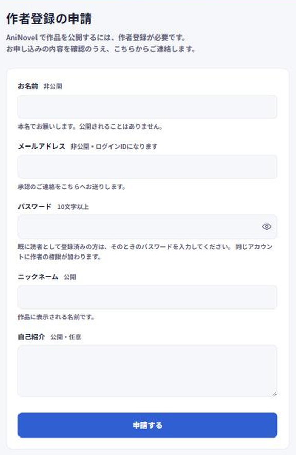
作者登録の申請（author-apply.html）
- トップページのメニューから作者登録の申請を開き、お名前・メールアドレス・パスワード（10文字以上）・ニックネーム・自己紹介を入力して「申請する」を押します。
- お名前とメールアドレスは公開されません。作品に表示されるのはニックネームです。自己紹介は任意で、公開されます。
- すでに読者として登録している方は、そのときのパスワードを入力してください。同じアカウントに作者の権限が加わります。
- 運営者が内容を確認し、承認のご連絡をメールでお送りします。承認後にログインすると、作者用のボタンが表示されます。
パスワードについて：パスワードはご本人だけが入力してください。運営者がパスワードをお尋ねすることはありません。
トップページの作者用ボタン
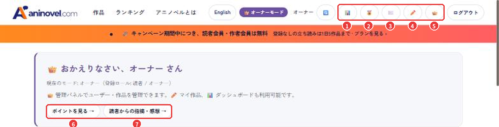
ログイン後のトップページ（図はオーナーの画面のため 👑 も表示されています）
- 1📊 ダッシュボード … 作品の読まれ方を確認します。
- 2🏅 ポイント … 作品が読まれて得たポイント（第4部）。
- 3✉️ 受信箱 … 読者からの誤字の指摘や感想（第4部）。
- 4✏️ マイ作品 … 自分の作品の一覧・新規作成（第1部）。
- 5👑 管理 … オーナー（運営者）だけに表示されます。作者の方には表示されません。
- 67ようこそ欄からも、ポイントと受信箱を開けます。
第1部 作品を書く
下書きの作成から、登場人物・表紙・保存まで
1.1 マイ作品（新規作成・編集の開始）
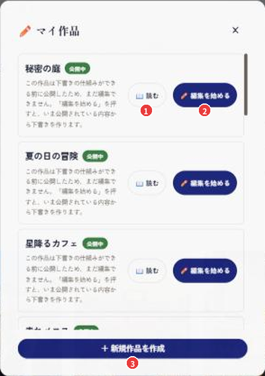
✏️ マイ作品
- 1📖 読む … 公開中の作品を読者と同じ画面で開きます。
- 2✏️ 編集を始める … 下書きの仕組みができる前に公開した作品には、まだ下書きがありません。このボタンを押すと、いま公開されている内容から下書きを作って編集画面を開きます。
- 3＋ 新規作成 … 空の下書きを作って編集画面を開きます。
一覧には作品ごとに状態が表示されます。
| 表示 | 意味 |
|---|
| 下書き | まだ依頼していません。読者には見えません。 |
| 審査待ち | 公開を依頼済みで、運営者の確認を待っています。 |
| 公開中 | 読者に表示されています。 |
| 公開中 ＋「変更あり・未審査」 | 公開後に編集して保存したが、まだ依頼していない状態です。読者には前の版が見えています。一覧の「📤 変更の公開を依頼」で依頼できます。 |
| 差し戻し | 公開に至りませんでした。「差し戻しの理由」が表示されますので、直して再度依頼できます。 |
1.2 編集画面の見かた
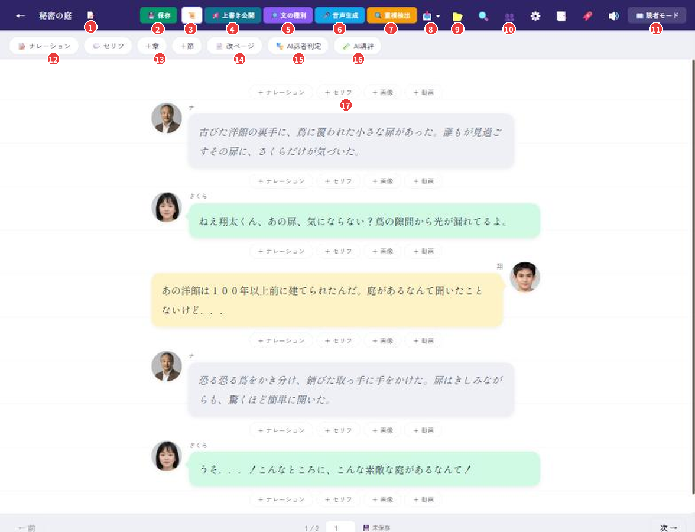
編集画面（作者モード）
- 1📝 小説情報 … タイトル・著者名・あらすじ・表紙など（1.7）。
- 2💾 保存 … サーバーの下書きに保存します（1.9）。
- 3📜 保存履歴 … 以前に保存した版に戻せます。
- 4📢 公開を依頼 … 運営者に公開を依頼します（第2部）。図はオーナーの画面のため「上書き公開」と表示されています。
- 5🔎 文の種別 … 地の文・独白・会話の判定を確認します（1.8）。
- 6🎤 音声生成 … 全部の文の音声を作ります（3.2）。
- 7🔍 重複検出 … 同じ文が二重に入っている箇所を探して削除します。
- 8📥 エクスポート … ファイルに書き出します。
- 9📂 インポート … 原稿ファイルを読み込みます。
- 10👥 登場人物 … 人物の追加・編集・アイコン設定（1.6）。その右は 🔍検索・⚙️表示設定・📑目次・🔖しおり・🔊読み上げ です。
- 11📖 読者モード … 読者に見える状態で確認します。読者モードでは「✏️ 作者モード」ボタンで戻れます。
- 12ナレーション／セリフ … ドラッグして好きな位置に落とすと、その位置に文を挿入します。
- 13＋章／＋節 … 見出しを入れます（1.5）。
- 14改ページ … ページの区切りを入れます。
- 15🎭 AI話者判定 … 誰のセリフか分からない箇所を AI に判定させます（1.8）。
- 16🧪 AI講評 … 作品の講評と点数（2.2）。
- 17追加バー … 吹き出しの間にある「＋ナレーション ＋セリフ ＋画像 ＋動画」で、その位置に追加します。
画面が狭いとき：スマートフォンや狭い画面では、一部のボタンが「⋮」メニューの中にまとめられます。働きは同じです。
1.3 文を書く・直す・並べ替える
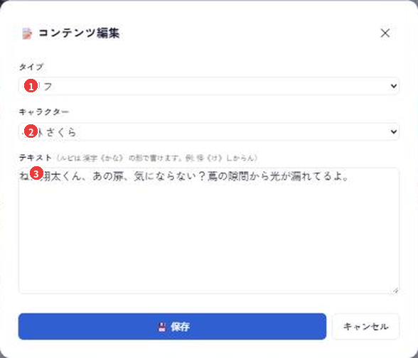
吹き出しをクリックすると開く「コンテンツ編集」
- 1タイプ … ナレーション（地の文）・セリフ・画像・動画などを選びます。ナレーションで人物を選ぶと、その人物の心の声（点線の吹き出し）になります。
- 2キャラクター … 誰の言葉かを選びます。吹き出しの色とアイコンはこの人物の設定に従います。
- 3テキスト … 本文です。ルビの書き方は次の節をご覧ください。「保存」でこの文だけが確定します（作品全体の保存は 💾 保存 で行います）。
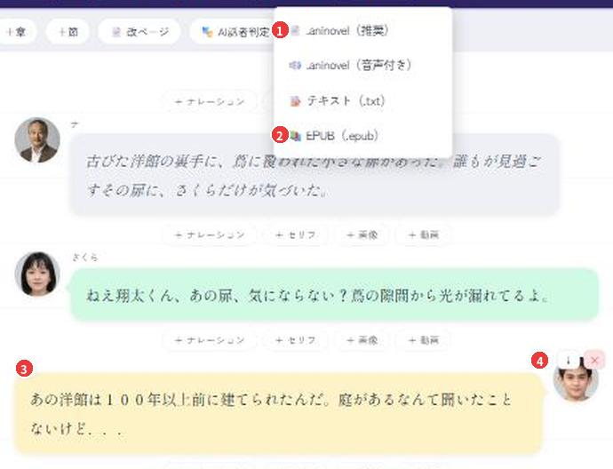
📥 エクスポートのメニューと、吹き出しにマウスを乗せたときの操作
- 12エクスポート形式（1.9）。
- 3⠿ ハンドル … ドラッグすると吹き出しを好きな位置へ移動できます。
- 4↑ ↓ × … 一つ上へ・一つ下へ・削除。
👥 登場人物パネルの人物カードを本文へドラッグすると、その人物のセリフとして追加できます。
1.4 ルビ（ふりがな）の付け方
漢字のすぐ後に、二重山かっこ 《》 で読みを書きます。
書き方の例
怪《け》しからん → 怪の上に「け」愛美《あいみ》 → 愛美の上に「あいみ」
ルビは読み上げにも使われます。人名など読み間違えられやすい語にルビを付けておくと、音声を作り直したときも正しく読まれます。逆にルビが無いと、音声エンジンが別の読み方（例：愛美→まなみ）をすることがあります。
1.5 章・節・改ページ
- ＋章 … 大見出しです。📑 目次に表示され、読者はそこから章へ移動できます。
- ＋節 … 章の中の小見出しです。
- 改ページ … 読者の画面ではここでページが切り替わります。1ページに吹き出しが多すぎると読みにくいので、場面の切れ目に入れることをお勧めします。
1.6 登場人物とアイコン
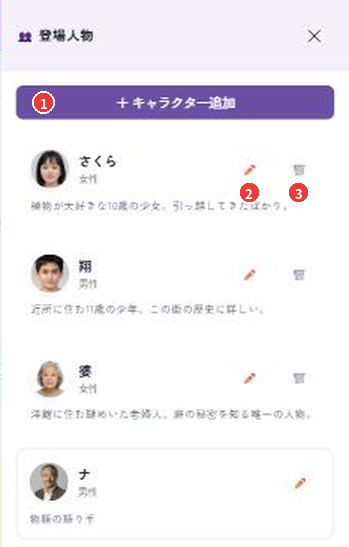
👥 登場人物パネル
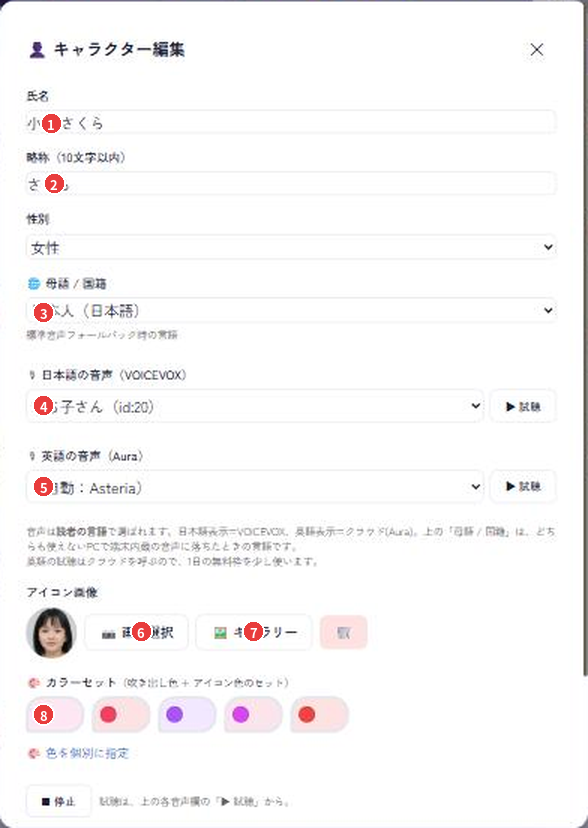
キャラクター編集
登場人物パネル：1＋キャラクター追加 2✏️ 編集 3🗑️ 削除（ナレーターは削除できません）。
キャラクター編集：
- 1氏名 … 正式な名前。英語版ではローマ字で表示されます（意味で訳されることはありません）。
- 2略称（10文字以内） … 吹き出しの上に出る短い名前。
- 3性別・母語 … 声の自動選択に使います。
- 4日本語の音声（VOICEVOX） … 「▶ 試聴」で確認できます。
- 5英語の音声 … 英語版の読み上げに使う声です。
- 6画像選択 … ご自身で用意した画像をアイコンにします。
- 7ギャラリー … 用意されたアイコンから選びます（下図）。
- 8カラーセット … 吹き出しとアイコン枠の色。「色を個別に指定」で細かく決められます。
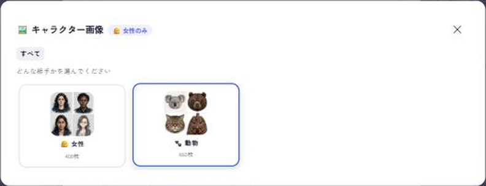
ギャラリー（人物の性別に合わせた候補が出ます）
アイコン画像の注意：ご自身で用意する画像は、ご自身で作ったもの、または使用が許されているものに限ります。実在の人物の写真、アニメ・ゲーム等のキャラクター画像は使えません。追加した画像は公開前に運営者が確認します。
1.7 小説情報と表紙
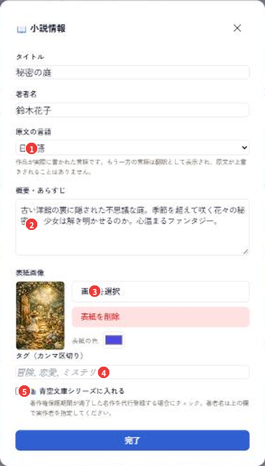
📝 小説情報
- 1原文の言語 … 作品を実際に書いた言語。もう一方の言語は翻訳として表示され、原文が書き換わることはありません。
- 2概要・あらすじ … 作品一覧と作品ページに表示されます。
- 3表紙画像 … 「画像を選択」で設定、「表紙を削除」で外します。縦長（2:3 程度）の画像がきれいに表示されます。
- 4タグ … カンマ区切りで入力します（例：冒険, 恋愛, ミステリー）。検索に使われます。
- 5青空文庫シリーズに入れる … 著作権の保護期間が終わった名作を入力する場合だけチェックします。著者名には原作者を入れてください。
入力が終わったら「完了」を押し、そのあと 💾 保存 で作品を保存してください。
1.8 文の種別の確認と AI話者判定
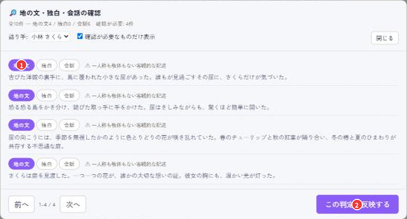
🔎 文の種別
原稿をインポートすると、各文が地の文・独白・会話のどれかを自動で判定します。🔎 文の種別 では、判定に自信が持てなかったものだけが一覧になります。
- 1正しい種別をクリックで選びます。「語り手」は一人称の作品で「私」にあたる人物です。
- 2この判定で反映する … 選んだ結果を本文に反映します。反映後は 💾 保存 をお忘れなく。
🎭 AI話者判定は、誰のセリフか分からないまま残っている箇所を AI に判定させる機能です。押すと件数の確認が出て、承諾すると処理します。結果は必ず読み返して、違っていれば吹き出しを開いてキャラクターを直してください。
1.9 保存・保存履歴・インポート・エクスポート
- 💾 保存 … 作品をサーバーの下書きに保存します。別のパソコンやスマートフォンからログインしても続きを編集できます。画面下の「未保存」表示は、まだ保存していない変更があるという意味です。
- 📜 保存履歴 … 前に保存した版の一覧から、元に戻したい版を選べます。大きく書き換える前の保険としてお使いください。
- 📂 インポート … .txt / .docx / .pdf / .epub / .aninovel の原稿を読み込みます（付録）。
- 📥 エクスポート … .aninovel（推奨）、.aninovel（音声付き）、テキスト（.txt）、EPUB（.epub）に書き出せます。バックアップや他の端末への移行にお使いください。
保存と公開は別です。保存しただけでは読者には届きません。公開中の作品を保存すると「変更を読者に届けるには、公開を依頼してください」と表示されます。
2.1 公開までの流れ
はじめて公開するとき
💾 保存→
📢 公開を依頼→
AI の内容確認→
AI講評（総合10点以上）→
運営者の確認→
公開
- 「公開を依頼」を押すと確認が出ます。承諾した時点ではまだ公開されません。
- 依頼のときに、作品といっしょに作成済みの音声も送られます。
- 結果は ✏️ マイ作品 の一覧に表示されます。差し戻しのときは理由が表示されます。
公開した作品を直したとき
編集して 💾 保存→
📢 公開を依頼→
変わった部分を AI が確認→
問題なければ自動で公開
- 前に承認された版との差分だけを AI が確認し、問題がなければそのまま公開されます。
- AI が判断に迷ったもの、画像を追加したもの、AI の確認ができなかったものは、運営者の確認に回ります。その間も前の版は公開されたままです。
- 変更していない作品を依頼しても、「前回の承認から変更がありません」と表示されます。
2.2 AI講評
🧪 AI講評 は、読み手が作品をどう受け取るかを知るための道具です。観点ごとに 0〜100 点で評価し、良い点と「ここをこうするともっと良くなる」という提案を返します。
- 講評を見られるのは、作者ご本人と、依頼後の運営者だけです。読者に見せるかどうかは作者が選べます（既定は非公開）。
- 本文を変えると作り直せます。変えていなければ前の講評が表示されます。
- 総合が 10 点に届かない作品は公開されません。これは作品として読めないものを止めるための下限で、出来の良し悪しを裁くためのものではありません。その場合は、いちばん低かった観点と改善の提案が表示されます。
2.3 審査で止まる内容と著作権
物語の中で人が死ぬこと、暴力や犯罪が起きること、恋愛が描かれることは、それ自体では問題ありません。審査では「描いているか」ではなく、「読者に行為をすすめているか」「必要のない露骨さがあるか」を見ます。次のものは公開できません。
| 分類 | 公開できないもの |
|---|
| 性的 | 性行為の露骨で具体的な描写。未成年者を性的に描いたもの（年齢の明示がなくても、学生・子どもとして描かれる人物を含みます） |
| 暴力 | 物語上の必然性を欠く、残虐行為の詳細な描写 |
| 差別 | 人種・民族・国籍・性別・性的指向・障害・出自・信仰に対する侮蔑や憎悪の扇動（作品がそれを肯定していない台詞としての描写は除きます） |
| 違法の助長 | 実行できる手順を伴う犯罪・薬物・武器の製造方法 |
| 自傷の誘引 | 自殺や自傷の方法の具体的な記述、それを勧める内容 |
| 個人情報 | 実在する人を特定できる住所・電話番号・勤務先など |
著作権：投稿できるのは、ご自身が書いた作品か、著作権の保護期間が終わった作品だけです。他の方の小説・歌詞・漫画の台詞などを無断で載せることはできません。画像（表紙・アイコン・挿絵）も同じです。AI の判定に通っても、権利者からの申し立てがあれば公開を止めることがあります。
2.4 公開後に直すとき・取り下げるとき
- 公開後に直したいときは、✏️ マイ作品 の「✏️ 編集」で開き、直して 💾 保存 → 編集画面の「📢 公開を依頼」またはマイ作品の「📤 変更の公開を依頼」です（2.1）。
- マイ作品の「📥 依頼を取り下げ」で審査待ちの依頼を取り下げられます。公開中の作品は「📥 公開を止める」で読者から見えなくなり、下書きに戻ります。
公開後に本文を直すときの注意：
- 本文・タイトル・登場人物の名前を変えると、その部分の手直しした英訳は外れ、機械翻訳に戻ります（3.1）。
- 文を変えた行は、作ってあった音声が使えなくなります。🎤 音声生成 で作り直してから依頼してください（3.2）。
- 読者から届いた誤字の指摘を直したら、受信箱で「対応済み」にしておくと整理できます（4.2）。
第3部 英語版と音声
3.1 英語版（自動翻訳）
- 読者が画面の「English」を押すと、作品は英語で表示されます。翻訳は自動で行われ、原文が書き換わることはありません。
- 登場人物の名前は意味で訳さず、ローマ字（ヘボン式）で表示されます。例：愛美 → Aimi。
- 運営者が英訳を手直しした作品では、本文・タイトル・人物名を変えるとその部分は機械翻訳に戻ります。英語版の品質を保ちたい場合は、公開後の大きな書き換えを避けるか、運営者にご相談ください。
3.2 音声の生成
🎤 音声生成 を押すと、作品の全部の文について、登場人物ごとの声で音声を作ります。作った音声は「公開を依頼」のときに作品といっしょに送られます。
| 言語 | 使うもの | 準備 |
|---|
| 日本語 | VOICEVOX（無料の音声合成ソフト） | 作者のパソコンで VOICEVOX を起動しておく必要があります。起動していないと日本語の音声は作れません。 |
| 英語 | クラウドの音声合成 | 準備は要りません。 |
- 長い作品は時間がかかります。途中で止まっても、作り終えた分は残り、次は続きから作られます。
- 音声を作っていない文や、送信に失敗した文は、読者の端末の標準音声で読み上げられます。もう一度依頼すれば再送されます。
- 読み方が違うときは、ルビを付けてから作り直してください。
第4部 読者の声とポイント
4.1 読者が送れるもの
読者が作品を読んでいるとき、画面の右下に「💬 評価・感想」ボタンが出ます（作者モードでは表示されません）。読者はここから2種類の投稿ができます。
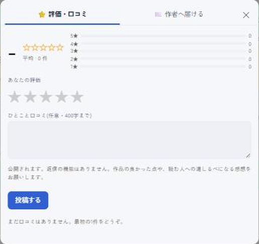
⭐ 評価・口コミ（公開されます）
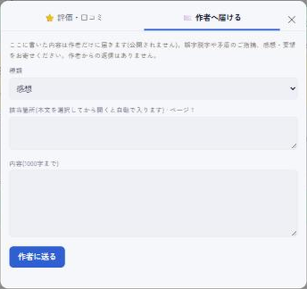
✉️ 作者へ届ける（作者だけが読めます）
| ⭐ 評価・口コミ | ✉️ 作者へ届ける |
|---|
| 内容 | ★1〜5 と、ひとこと口コミ（400字まで） | 種類（誤字・脱字／矛盾・設定のずれ／事実・用語の誤り／感想／要望・提案／その他）と本文（1000字まで） |
| 誰が見るか | すべての読者に公開 | 作者と運営者だけ |
| 送れる人 | ログインした会員（1作品に1人1件。書き直し・取り下げ可） | 会員と立ち読みの読者 |
| 返信 | 返信やスレッドの機能はありません。読者どうしや作者との言い合いにならないよう、一方向の投稿だけにしています。 |
読者が本文の一部を選んでからボタンを押すと、その文が「該当箇所」として自動で入り、ページ番号もいっしょに届きます。
4.2 受信箱（読者からの指摘・感想）
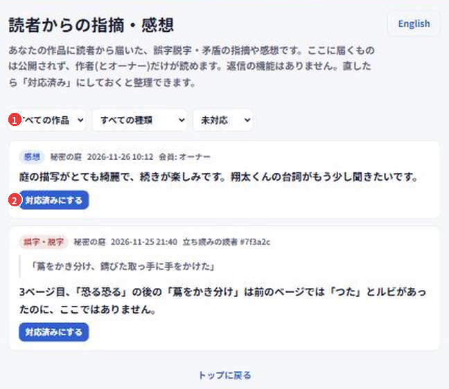
✉️ 受信箱（図の投稿内容は説明用の例です）
- 1絞り込み … 作品・種類・状態（未対応／対応済み／すべて／非表示）で絞り込めます。
- 2対応済みにする … 直し終えたものに付けると、未対応の一覧から消えて整理できます。いたずらや不適切な投稿は「非表示」にできます。
- 送り主は、会員ならニックネーム、立ち読みの読者なら「立ち読みの読者 #7f3a2c」のような記号で表示されます。記号は同じ読者なら同じになるので、同じ方からの投稿かどうかは分かりますが、メールアドレスなどは分かりません。
- 引用（灰色の線の部分）は、読者が選んだ本文です。直す場所を探す手がかりにしてください。
4.3 評価・口コミとランキング
- 作品カードとランキングに、平均の★と件数が表示されます。
- 作者はご自身の作品を評価できません。
- 口コミに返信はできません。規約に反する口コミは運営者が非表示にします。気になる口コミがあれば運営者にお知らせください。
- ランキングの「評価順」は、★の付いた作品が「全作品の半数」か「20作品」のどちらか少ないほうに達してから始まります。それまでは人気順で表示されます。件数の少ない作品が★1つで上位に来ないよう、件数も加味して並べています。
4.4 ポイント
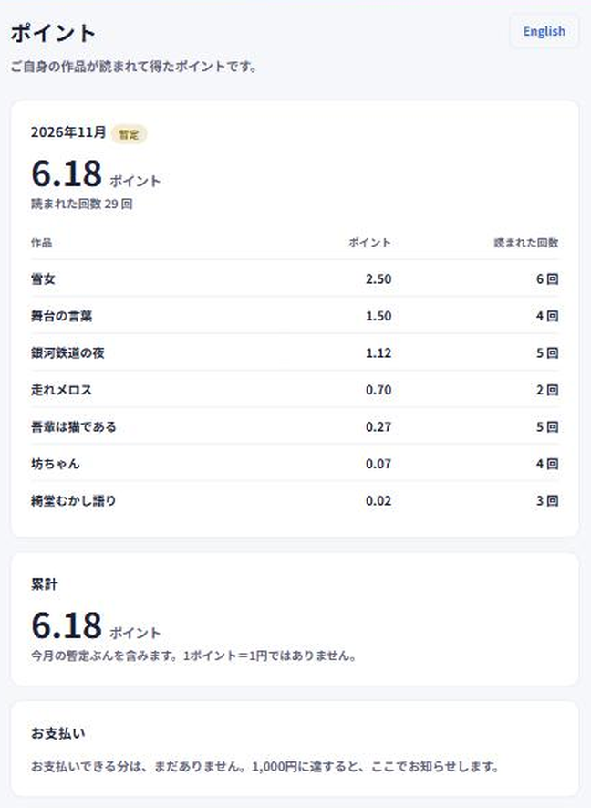
🏅 ポイント
- 作品が読まれるとポイントが付きます。1回分のポイントは「読んだ割合 × 読者の重み（登録会員 1.0／未登録 0.5）」です。開いていた時間が30秒未満の記録は数えません。
- 当月の分は「暫定」で、月が締まると確定します。
- 1ポイント＝1円ではありません。1ポイントあたりの金額は、その期間の収益と総ポイントから決まります。お支払いできる額が1,000円に達すると、この画面でお知らせします。詳しくはポイント画面からリンクしている「収益分配とポイントの算定方法」をご覧ください。
第5部 注意事項のまとめ
公開前・公開後のチェックリスト
公開を依頼する前に
- 💾 保存したか（画面下が「未保存」のままになっていないか）
- 📖 読者モードで最後まで読み、吹き出しの人物・心の声・改ページが正しいか
- 🔎 文の種別、🎭 AI話者判定の結果を確認したか
- 人名など読み間違えやすい語にルビを付けたか
- 表紙・あらすじ・タグを入れたか
- 文章も画像も、ご自身のもの（または使ってよいもの）か
- 🎤 音声生成を済ませたか（日本語は VOICEVOX を起動して）
公開した後で
- 直したら、保存だけでなくもう一度「公開を依頼」する
- 文を変えた行は音声を作り直す
- 本文・タイトル・人物名を変えると、手直しした英訳はその部分だけ機械翻訳に戻る
- 受信箱を時々確認し、直したものは「対応済み」にする
- 大きく書き換える前は 📥 エクスポートでバックアップを取る（📜 保存履歴でも戻せます）
やってはいけないこと：他の方の作品や画像の無断転載、実在の人物の個人情報の掲載、未成年者を性的に描くこと、パスワードを他の人に教えること。
分からないことは、運営者（nobby@aninovel.com）までご連絡ください。
▲ 目次に戻る
付録
A. 読者としての使い方（かんたんに）
- 作品一覧またはランキングから作品を選ぶと、吹き出しで読めます。「次 →」「← 前」またはキーボードの ← → でページを送ります。
- 🔊 で朗読が始まります。📑 目次で章へ移動、🔖 しおりで今のページを記録、⚙️ で文字の大きさ・ダークモードなどを変えられます。
- 画面の「English」で英語表示に切り替わります。
- 未登録でも1日5作品まで立ち読みできます。会員登録（無料キャンペーン中）で制限がなくなり、評価・口コミも投稿できます。
B. ショートカットキー
| キー | 動作 |
|---|
| ← / → | 前のページ／次のページ（縦書き表示では逆向き） |
| PageUp / PageDown | 前のページ／次のページ |
| Home / End | 最初のページ／最後のページ |
| Ctrl + F | 作品内の検索 |
| Esc | 開いているパネルや画面を閉じる |
C. インポートできるファイル形式
| 形式 | 説明 |
|---|
| .txt | テキスト。「」のセリフや話者を自動で判別します。青空文庫形式のルビ（｜漢字《かな》）も読み込めます。 |
| .docx | Word の原稿。 |
| .pdf | PDF から文字を取り出して読み込みます（画像だけの PDF は読めません）。 |
| .epub | 電子書籍。章の構成を保って読み込みます。 |
| .aninovel | アニノベル専用形式。登場人物・アイコン・構成をそのまま復元します。 |
インポートの後は、🔎 文の種別と登場人物の割り当てを確認してから保存してください。
▲ 目次に戻る